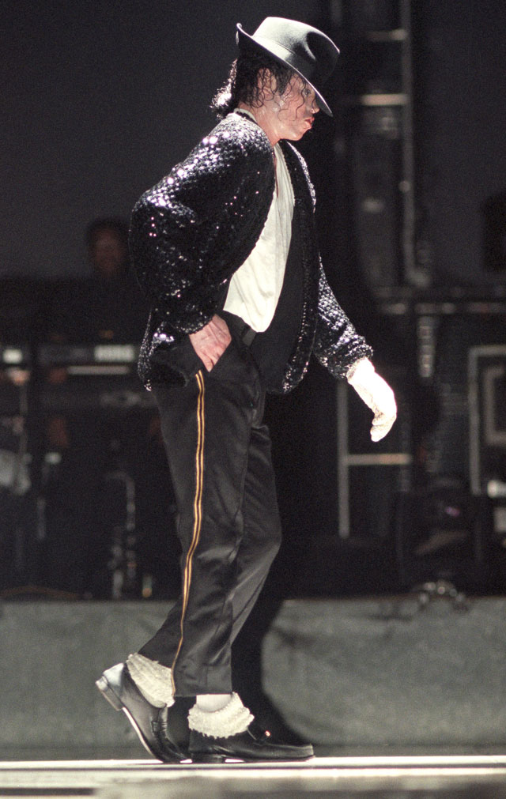
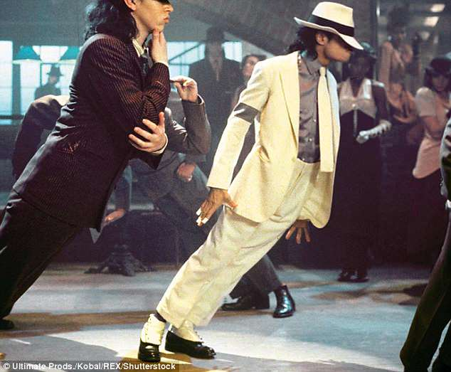

🌅 1. The Sunrise — Childhood

Michael Joseph Jackson was born on August 29, 1958, in Gary, Indiana. He was the eighth of ten children in the Jackson family.
Music became an important part of his childhood. The Jackson household developed into an environment where singing, dancing and rehearsal became serious activities.
Michael was still very young when his extraordinary abilities became apparent. His voice had a distinctive quality, while his sense of rhythm and stage presence separated him from many other young performers.
The childhood chapter of Michael's life was unusual. While other children were spending their early years discovering ordinary childhood experiences, Michael was already performing for audiences.
☀️ 2. The Jackson 5 — The Morning Gets Brighter

The Jackson 5 became a major force in popular music. Their energetic performances and infectious songs reached audiences across the United States and eventually around the world.
Michael's position within the group gradually became increasingly prominent. His youthful voice, dancing and natural ability to connect with an audience made him a standout performer.
Songs such as "I Want You Back," "ABC," "The Love You Save" and "I'll Be There" became important parts of the group's history.
The Jackson 5 years gave Michael an education that could never be reproduced in a classroom. He learned timing, choreography, microphone technique, audience interaction and the discipline required to perform repeatedly at a professional level.
🌤️ 3. Finding His Own Voice
Eventually, Michael had to answer a difficult question: Could he become a major artist outside the family group that had introduced him to millions of listeners?
His solo career gradually became a separate artistic identity. He was no longer simply the youngest member of the Jackson 5.
He was becoming Michael Jackson.
His collaboration with producer Quincy Jones would become especially important. Together they created music that helped redefine Michael's position in popular culture.
🌇 4. Off the Wall — Stepping Into the Light

Released in 1979, Off the Wall represented a major breakthrough in Michael Jackson's solo career.
The album blended pop, disco, funk and soul while displaying his increasingly mature vocal and performance abilities.
Songs including "Don't Stop 'Til You Get Enough" and "Rock with You" helped establish him as a major solo star.
The album's success created a new challenge: how could Michael possibly follow it?
The answer would change music history.
🌟 5. Thriller — The World Changes

In 1982, Michael Jackson released Thriller.
The album became a global phenomenon and eventually established itself as one of the best-selling albums in music history.
Billie Jean, Beat It and Thriller became cultural landmarks.
But the achievement was bigger than sales.
Michael helped transform the music video from a simple promotional tool into a major form of visual entertainment.
Songs, choreography, fashion, storytelling and cinema-like production could all become part of the same artistic experience.
The Thriller short film remains one of the most recognizable music-video productions ever created.
🕺 6. The Moonwalk Moment


In 1983, Michael performed Billie Jean during the Motown 25 television celebration.
During the performance, he performed the movement that became known around the world as the moonwalk.
The movement itself had earlier roots in dance traditions, but Michael's performance introduced it to an enormous mainstream television audience.
Soon, people everywhere were trying to reproduce the mysterious illusion of walking backward while appearing to glide across the floor.
🔥 7. Bad — The Superstar Gets Bigger

Following Thriller was an enormous challenge.
In 1987, Michael released Bad and continued expanding his artistic world.
The album produced major songs including Bad, The Way You Make Me Feel, Man in the Mirror, Dirty Diana and Smooth Criminal.
The visual style of the era was equally memorable. Costumes, choreography, dramatic lighting and cinematic storytelling became part of the Michael Jackson experience.
⚡ 8. Dangerous — Reinvention Continues

In 1991, Dangerous demonstrated that Michael was still willing to experiment.
Black or White, Remember the Time, In the Closet and Heal the World represented different sides of his creativity.
His visual productions continued becoming increasingly ambitious.
Michael's career had moved beyond simply producing songs. He was creating complete artistic experiences.
❤️ 9. The Humanitarian Side

Michael Jackson's public identity extended beyond entertainment.
Humanitarian themes appeared repeatedly in his music and public activities.
He was associated with charitable efforts and causes involving children, poverty, health and humanitarian relief.
His involvement with We Are the World in 1985 became one of the most famous examples of musicians coming together for a humanitarian cause.
Songs such as Heal the World and Man in the Mirror also reflected themes of compassion and personal responsibility.
📀 10. HIStory — Art Under Pressure

Released in 1995, HIStory combined earlier successes with new material.
The project reflected the complicated relationship between Michael and the enormous public attention surrounding him.
Scream, recorded with his sister Janet Jackson, became a major visual and musical statement.
Other songs addressed social issues and public criticism.
⚠️ 11. Fame Under a Microscope
The greater Michael's fame became, the greater the attention surrounding his private life became.
His appearance, relationships, lifestyle and personal decisions were frequently discussed by the media.
Allegations of child sexual abuse became a major part of the public story surrounding him. Jackson denied wrongdoing.
In 2005, he was tried in California on criminal charges relating to allegations involving a child and was acquitted on all counts.
These controversies remain an important part of any serious discussion of his life.
A balanced historical account should distinguish allegations, claims, legal proceedings and established court outcomes rather than presenting every accusation as proven fact.
🎵 12. Invincible — Entering a New Century

In 2001, Michael released Invincible.
By then, the music industry had changed dramatically. Digital technology was becoming more important, new artists were changing pop culture, and the industry was moving toward a different commercial landscape.
Michael nevertheless continued experimenting with contemporary production and collaborations.
The album included songs such as You Rock My World, Butterflies and Whatever Happens.
🎬 13. This Is It — One More Stage

In 2009, Michael announced a planned series of concerts in London called This Is It.
The concerts were expected to become a major comeback.
Rehearsals involved music, choreography, lighting, staging and visual effects.
Michael was once again preparing to return to the stage.
But the comeback would never take place.
On June 25, 2009, Michael Jackson died in Los Angeles at the age of 50.
The rehearsal footage later became the basis of the documentary film This Is It, giving audiences a final glimpse of preparations for the concerts.
🌅 14. Sunset — The Legacy Lives On

Michael Jackson's death ended his life but not his influence.
His music continued reaching new listeners.
His choreography continued being studied and reproduced.
His music videos continued influencing visual artists.
His fashion became instantly recognizable.
His performances remained reference points for singers, dancers and entertainers.
Modern performers often combine singing, dancing, fashion, cinematic music videos and enormous stage productions.
Michael Jackson helped establish the scale of that modern pop-performance model.
✨ Final Reflection — From Sunrise to Sunset
Michael Jackson's story contains extraordinary success, artistic innovation, worldwide fame, humanitarian aspirations, controversy, personal pressure and an enduring cultural legacy.
His journey began with the sunrise of childhood talent.
The morning brought the Jackson 5.
The afternoon brought Off the Wall, Thriller, Bad and Dangerous.
The evening brought increasing public scrutiny and personal challenges.
The sunset arrived in 2009.
Yet the story did not disappear.
The songs remained.
The dances remained.
The videos remained.
The influence remained.
That is the extraordinary paradox of a cultural legend: a human life has an ending, but the work created during that life can continue travelling from one generation to the next.